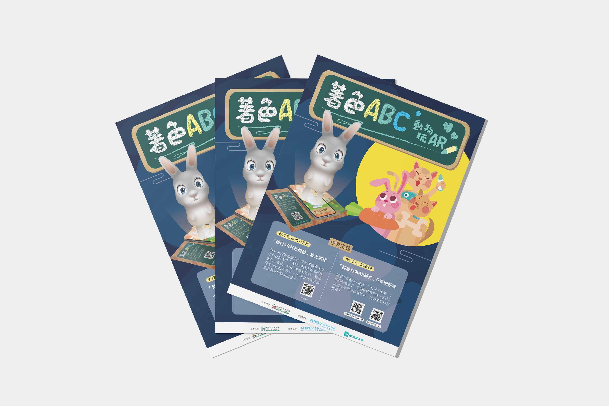

這個中秋兔子不搗藥，下凡來「搗蛋」。2021由新北市圖書館與米菲多媒體一同合辦的活動，中秋一起玩月兔著色，透過Web AR技術讓著色卡上的兔子跳起來，親子一同享樂。
在此次活動中我負責海報設計。這是我第一次製作校外的活動海報，經歷反覆修改與溝通後最終才定版，也從中學到了不少。
使用工具/軟體
- Adobe Illustrator
- Adobe Photoshop
設計理念
沿用公司以前的活動「著色ABC，動物玩AR」的明信片主視覺，增加中秋節的元素，以及本次活動的特色重點--動物著色AR卡片，製作成這張活動海報。
過程記錄
在每一次的修改中，我都得到了不少心得，在過程中最痛苦的事是無法隨心所欲地發揮，但多了些限制也更具挑戰性。有時候被告知要修改的原因並不是大面積的更改，反而是某個地方沒有對齊，或是顏色不夠和諧，所有的細節都必須注意到，除此之外，我也認知到海報最重要的並不是他的美觀性，當然這也很重要，但重點應在於消息的傳達，裝飾必須要做到合宜卻不影響文字閱讀。在經歷反覆修改後，最終成品和我一開始做的已經相差甚遠，但也從中看到自己的成長。